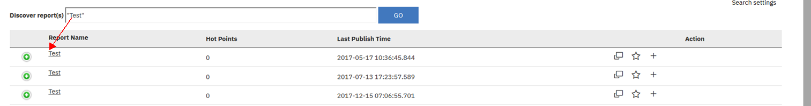
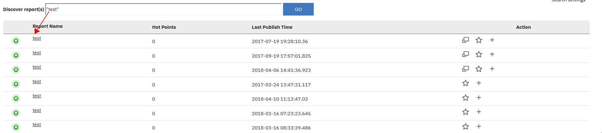

The Cognitive Search page enables to search a report based on key words. All that you required to know is the report ID
or any key words part of the report name, so the feature can pull all the matching results.
Link to cognitive searchis placed under BI@IBM controls panel, the link opens in the new window with a search box
in the middle where user can enter the ID or key words to search for a report.
search setting, there is also a provision to modify the search settings, link placed at the top right corner of the cognitive search page.
It allows user to refine / narrow down the results on various parameters including domain, # of results, etc.
- Search domains -user can set Domains to narrow down the results
- Search fileds - user can set search fields for accurate results
- Results per page - user can choose the count of matching results show per page for better user experience
Cognitive Search provides results much faster when compared to the existing report search feature and it allows users to not just search for a report,
but to do the following as well:
- Search for a report.
- Display key information about the report in the search results page.
- Display all the available prompts in the search results page.
- Allows you to do a TBS schedule.
- Add any report to a favorites section for each access.
- Rank the report based on pre-defined parameters.
- Add comments and share thoughts.
Few suggested methods below to retrieve the reports information:
- fuzzy search - the easiest way when you do not know the report ID but know the key words of the report name.
By entering the key words in search box, cognitive search will check for the matching results and displays it on your screen.
( Product Owner Comments: Do not think the word search is working as expected, kindly check before we include this in FAQs )
- '* ' search - helps when the user is unaware of the full report name, user is required to include '*' for the missing words.
Example: *SMS9388* will pull all the matching results that could have some beginning or ending words.
( Product Owner Comments: Do not think the '*' search is working as expected, kindly check before we include this in FAQs )
- Case sensertivity - you can put the words in search box with case sensitivity.
Example:
capital letters:

lower letters:

- Exact matching search -It helps only when you know the complete report name.
Since the report names are not duplicate, the results page would provide you with unique matching results.
( Product Owner Comments: Do not think the Exact matching search is working as expected, kindly check before we include this in FAQs )
Besides doing a basic search, it will also display - available prompt selections and Key report information about each matching result.
This provides users with more insights about a report with out really running each matching result.
Each matching result is prefixed with a twisty (+) which user can expand by clicking on it to see the prompts and key information.
Two other main features that are available within Cognitive Search are ranking reports and adding comments and thoughts.
The main intent of this feature is to help the SMS users get a perspective of a report from other existing users.
Users can rank a report with a 1-5 star rating against the following predefined parameters: Performance, Ease of Use, Data Quality and, Reliability.
Users are also allowed to add comments and share their thoughts or experience using a report.